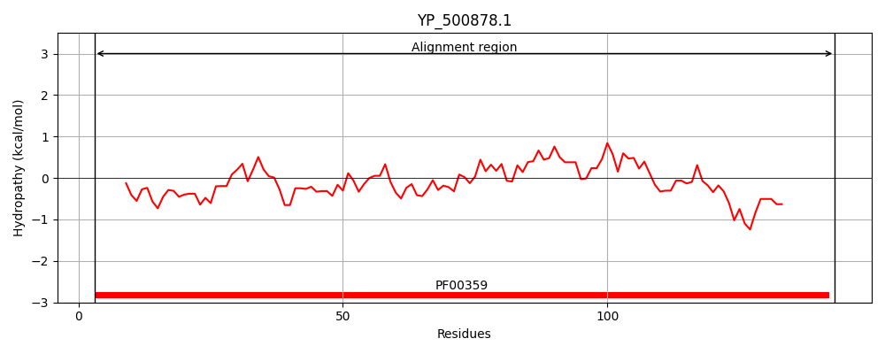
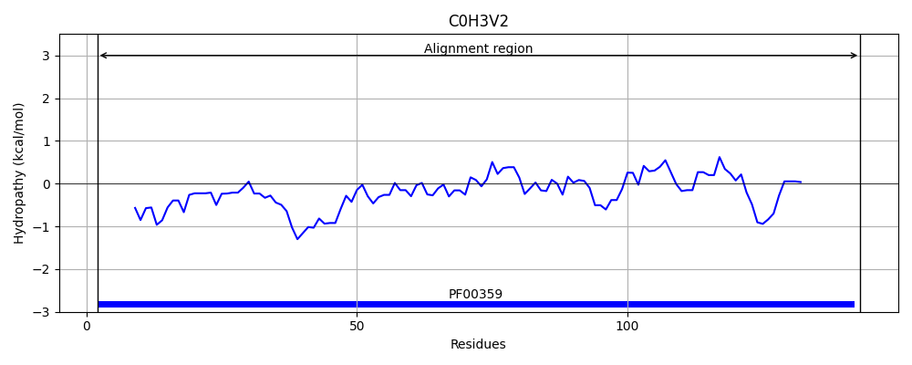
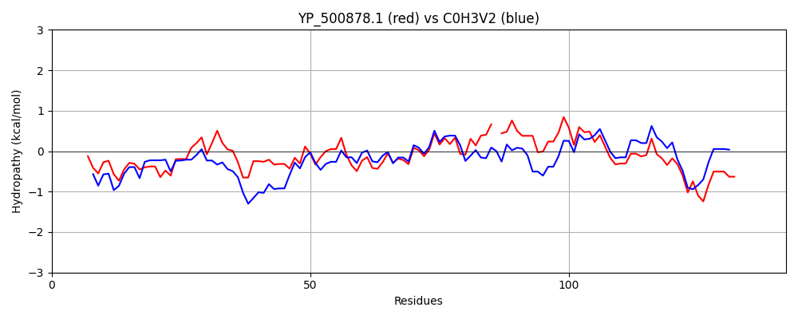

Hit Accession: C0H3V2
Hit TCID: 4.A.2.1.5
Hit Description: gnl|BL_ORD_ID|2276 gnl|TC-DB|C0H3V2|4.A.2.1.5 Mannitol-specific phosphotransferase enzyme IIA component OS=Bacillus subtilis (strain 168) OX=224308 GN=mtlF PE=1 SV=1
Mach Len: 142
e:0.000000
Query TMS Count : 0
Hit TMS Count: 0
TMS-Overlap Score: 0.000000
Predicted Substrates:CHEBI:6686;D-mannitol
BLAST Alignment:
| Protein Hydropathy Plots: | |
|---|---|
|  |  |
Pairwise Alignment-Hydropathy Plot: | |
|  | |